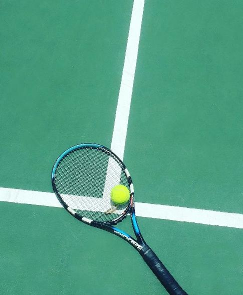
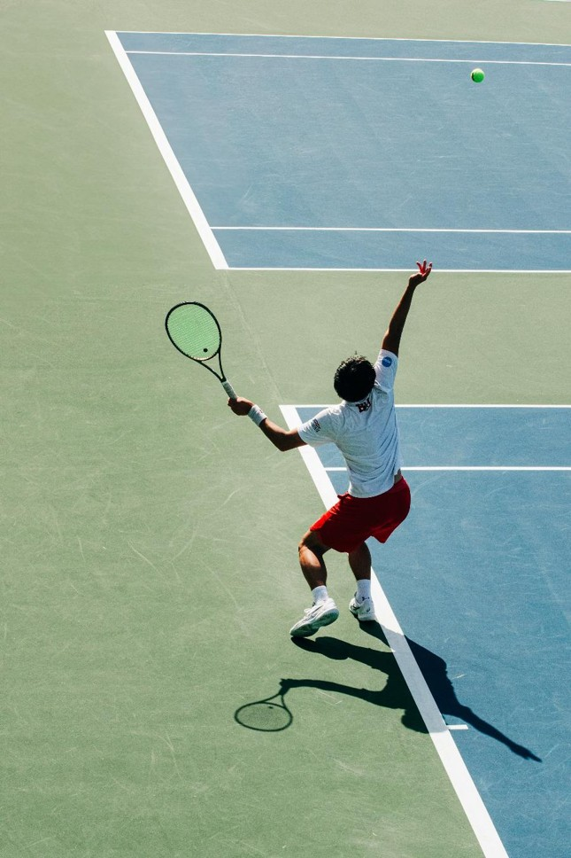
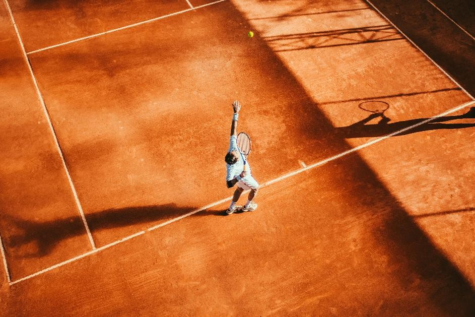
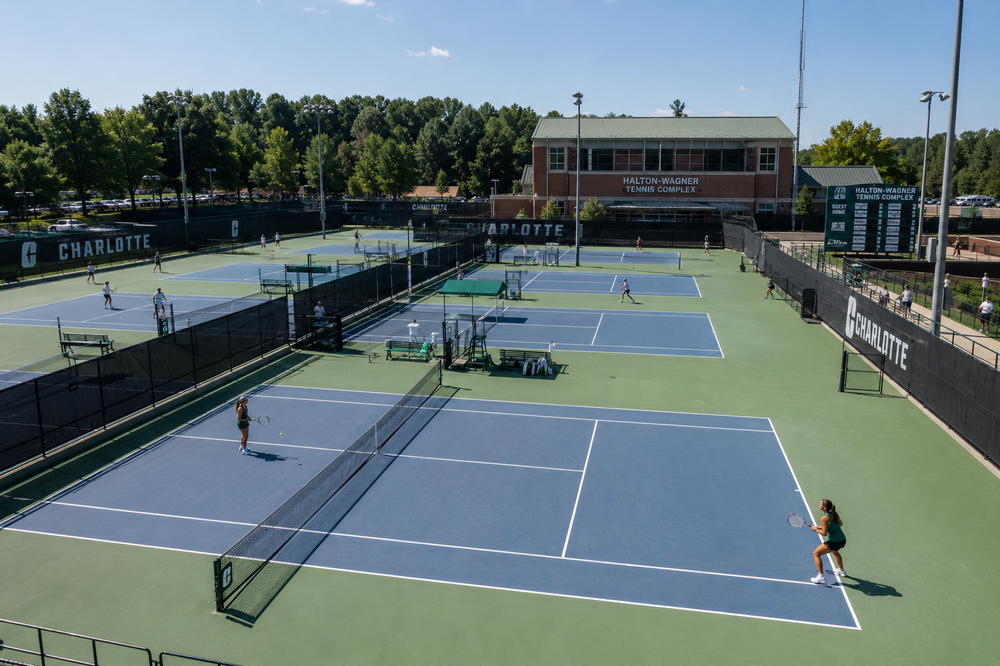

Home
Tennis is a very fun and competitive sport, and I love to play this in my freetime. Tennis is easy to learn for beginners and it is a nice way to be physically active and hang out with friends.
This sport is suitable to play for people of all ages and it can fit into your schedule through getting the required equipment, having some practice sessions and holding matches with the people who practice with you.

About Me
I first played tennis with my brothers at the apartment's tennis courts. Later, I attended a tennis practice club with my peers at elementary school. I got interested in this sport and continue to play it for exercise and improving myself.

Best Times & Seasons
Tennis is usually in the daytime or in the evening, when there is enough lighting. It is important to play under good and safe weather. I play tennis in the evening time since it helps me relax and move around a bit after a long day of work.
The professional tennis season happens from January to November. Major tournaments are spread out through the year and players would play at indoor courts during colder weather.

Professional Tennis Tournaments
| Tournament | City | Season (months played) |
|---|---|---|
| Australian Open | Melbourne | mid-to-late January |
| French Open | Paris | late May to early June |
| Wimbledon | London | late June to early July |
| US Open | New York | late August to early September |
Best Locations
Tennis courts are the best places to play and practice this hobby. According to research, there are over 250,000 courts available across the nation.
In Charlotte, an available location to play tennis for university students is the Halton-Wagner Tennis Complex. Students and staff have access to the tennis courts and can play here anytime they wish. They can connect with the tennis club at the university if they are interested in finding friends to play with and practice regularly.
There are two types of tennis courts, public parks and indoor clubs.
Public Parks Available at Charlotte
- Tennis Courts at Mallard Creek Community Park - has outdoor lighting for evening play
- Winchester Tennis Courts - has a big court and smaller court to play singles or doubles matches
Indoor Clubs For Tennis
- Prosperity Athletic Club - has 10 outdoor clay tennis courts

AI Prompt used: "Create a photorealistic image of the Halton-Wagner Tennis Complex at UNC Charlotte filled with tennis players at each court."
How to Prepare
To start playing tennis, you would need to...
- Get the required equipment: this involves a lightwieght racket, tennis balls, and a comfortable pair of shoes.
- Find a court near you
- Visit the court and start some tennis drills for practice
- Continue to practice the sport and play with others to get familiar with tennis
Why Tennis?
I love to play tennis because I feel refreshed when playing it. Tennis is good for the player's health and this hobby lets me hang out wih my friends. Playing tennis helps me stay motivated at the end of the day and I look forward to playing this sport for my individual well-being.